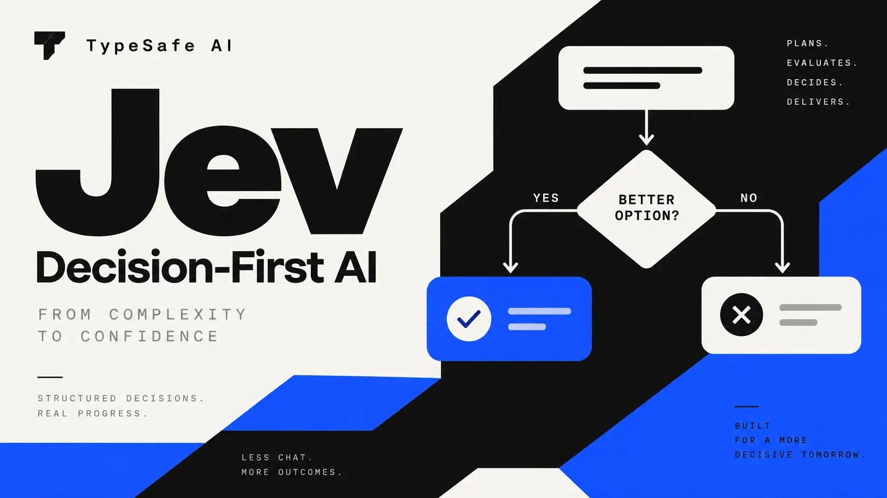

Notes from building LLM pipelines, RAG systems and ML infrastructure in production.

An evaluation of TypeSafe AI's Jev decision model as a prompt-injection detector: calibration, over-blocking, embedded and obfuscated attacks, multilingual input, and where it fits in a security architecture.
Writing is in progress. Check back shortly.